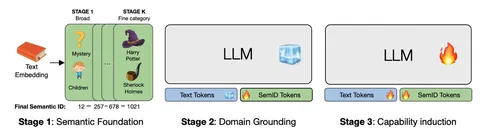

В сегодняшней статье Spotify представляют NEO — унифицированную модель decoder-only, которая работает с гетерогенными данными (текст и рекомендательные объекты). При этом она должна удовлетворять жёстким требованиям к качеству выдачи и латентности.
Традиционные рекомендательные системы, несмотря на доказанную эффективность на больших объёмах данных, по-прежнему плохо справляются с двумя задачами: пониманием неявных пользовательских интересов и обобщением текстовых представлений объектов.
В статье обращают внимание на то, что существующие подходы не умеют одновременно рассуждать над доменными объектами, пользовательским поведением и естественным языком. Вдохновляясь мультимодальными архитектурами, авторы NEO решают эту проблему, интерпретируя Semantic ID объектов как отдельную модальность наравне с текстовыми токенами. Обучение ведут на смешанных данных, где в текстовые последовательности подмешивают идентификаторы рекомендательных объектов.
Предложенный фреймворк поддерживает несколько режимов: генерацию рекомендаций, генерацию текстов, текстовый ретривал, а также адаптацию ответов на основе инструкций. Обучение модели проходит в три этапа:
1. Создание семантических представлений (Semantic ID creation). Формируется база соответствий «объект — Semantic ID», которая задаёт словарь доменных токенов. То есть в дальнейшем модель сможет ссылаться на конкретные объекты.
2. Формирование знаний о домене (Domain Grounding). Модель учится воспринимать Semantic ID наравне с текстовыми токенами, выстраивая единое представление для обоих типов данных. Цель — научить модель воспринимать доменные токены как полноценную часть языка: понимать контекст вокруг них, связывать их с текстовыми описаниями и выстраивать единое семантическое пространство для обеих модальностей.
3. Формирование навыков через инструкции (Capability Induction via Instruction Tuning). Модель дообучается на конкретных задачах: next item prediction, ретривал по текстовым запросам, описание интересов пользователя, обоснование рекомендаций.
Чтобы показать, что фреймворк не привязан к конкретной архитектуре, авторы провели адаптацию Llama 3.2 1B с использованием NEO. Стадия Domain Grounding дала прирост около 18% в текстовом ретривале, что подтверждает эффективность подхода.
Авторы проводят серию аблейшнов, которые подтверждают, что выбранная архитектура обучения обоснована. Наивная замена Semantic ID на стандартные идентификаторы, схлопывание стадий алайнмента в одну или переход на continuous pretrain ухудшают либо качество рекомендаций, либо способность модели генерировать связные тексты.
Особенно это заметно на задачах, требующих строгого следования инструкциям, и при генерации последовательностей смешанной структуры (текст + рекомендательные объекты). В офлайн-экспериментах NEO демонстрирует небольшой, но стабильный прирост над базовыми моделями в монозадачах по метрикам HR@K и NDCG@K.
@RecSysChannel
Обзор подготовила
